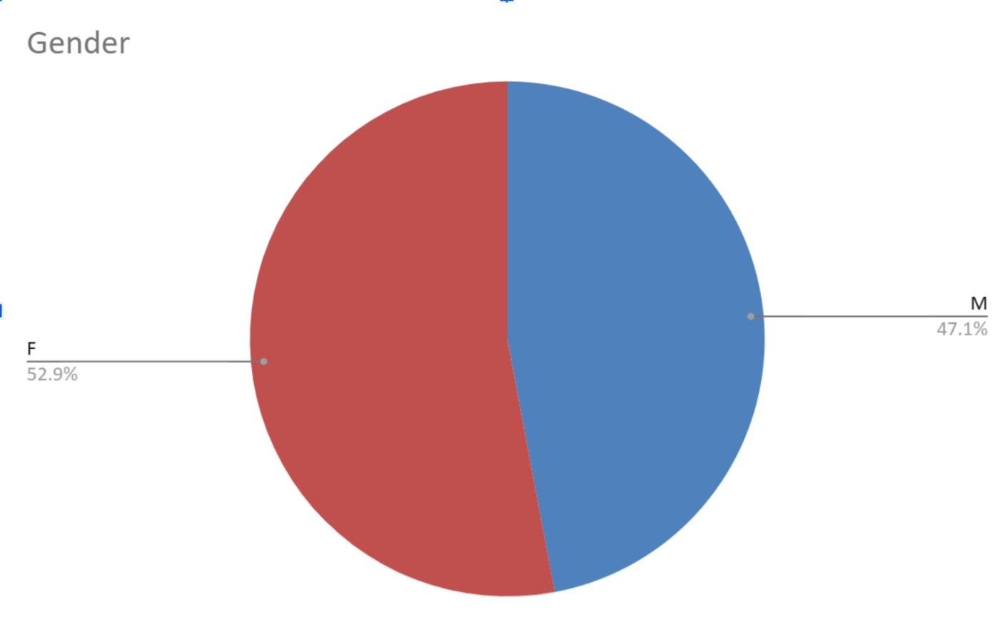
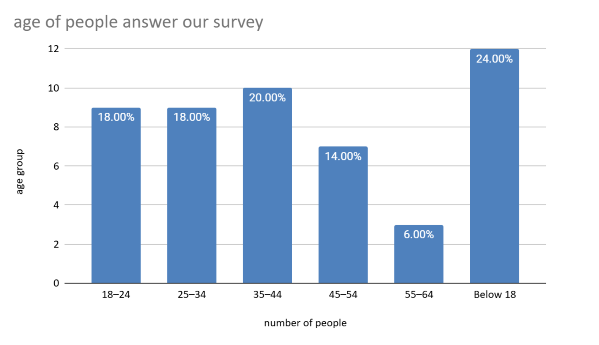

Sonny
Sonny
Data
1.characteristics of sample
I'm going to introduce the characteristics of who answers my survey question.
1.1 Total Sample Size
1.2 Gender Distribution
The sample consists of 27 female participants (52.94%) and 24 male participants (47.06%).The sample consists of females 52.94% and males 47.06%. This balanced 1:1 ratio ensures a neutral analysis without gender bias.

1.3 Age Distribution
The distribution is a pie chart.
The age distribution comprises 12 respondents below 18 (23.53%), 9 aged 18–24 (17.65%), 9 aged 25–34 (17.65%), 11 aged 35–44 (21.57%), 7 aged 45–54 (13.73%), and 3 aged 55–64 (5.88%). A bar chart compares these six distinct age brackets.24% people is below 18, lower percentage and high percentage is between 18%.

2.survey question analysis
Q1:Do you know of any financial support available when it comes to adopting dogs?
A pie chart was used because there were only two choices. The results showed that 98.04% (50 people) answered "No" and 1.96% (1 person) answered "Yes." This suggests that very few people know about financial support for dog adoption.

Q2:Please name any financial support for dog ownership in general that you are aware of.
A bar chart was used to compare the responses. The results showed that 90.20% (46 people) could not name any support program, while only 9.80% (5 people) could. This suggests that awareness of financial support programs is low.

Q3:Would you be more inclined to adopt a dog if rescue centres offered financial planning support?
A bar chart was used to display the responses. The largest group, 47.06% (24 people), selected "Agree" or "Yes." This suggests that financial planning support may encourage dog adoption.

Q4:If we want higher adoption rates, should taxes be increased on dogs purchased from breeders or pet shops?
A bar chart was used to compare the responses. The most common response was "Disagree" or "Strongly Disagree" at 37.25% (19 people). This suggests that many people do not support this idea.

Q5:If increased veterinary care options were made available for adopted dogs, would you be more inclined to adopt?
A bar chart was used to display the results. Most respondents, 76.47% (39 people), selected "Agree" or "Yes." This suggests that better veterinary care may increase adoption rates.